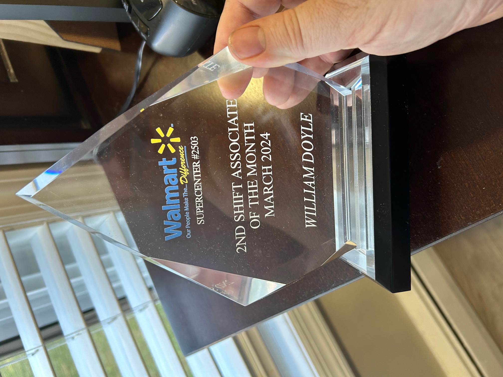

What I did before.
I graduated from Montclair State University in Northern New Jersey (USA) in 1992, and soon after, I became a Graphic Designer working for The Great Atlantic & Pacific Tea Company (A&P) where I helped design food circulars and more. I was very good at it as it only ended because A&P went out of business in 2015. I spent 18.5 years there and those skill sets earned me wonderful opportunities to work with Ivie & Associates (Today, they are called Quad) in Maryland and Clark Printing in New Jersey for the next few years, as my Digital Resume Website will explain in further detail with the link below. I was fluent in Print Design but as the Covid Pandemic changed everything, I adapted and grew.
What I am doing now.
With the Covid Pandemic happening in 2020 and as everything shut down, I took that down time to learn and understand Web Design. I was introduced to the wonderful world of Digital Design as I learned on my own in my spare time (on a part time basis) to strengthen my skill sets also using all online courses I could find. To pay the current bills, I took on jobs as a Personal Shopper which was relatable to me with Advertising and I even earned an Associate of the Month Award at Walmart in March of 2024 (below). Not bad for making the most of any opportunity that was presented to me. I am adaptable with a very strong work ethic!
Understanding Web Design.
I always thought or remembered online website construction to be like building a home. You have your HTML, which serves as your framework and dry wall build. Then you have your CSS which serves as your decorative elements to that house build. (For example, it's like painting those walls with a certain color like red or blue, or wallpaper and then carpet or hardwood floors. It's your choice to make it look beautiful.) Then you have Java Script which serves as your action, like going into a room and turning on the lights. Things will happen that's wonderful!

What I am trying to do is give a clean and informative presentation to the viewer of any website I do that is easy to navigate and understand. The idea is to pass information to the viewer as the site will always be responsive. That means it works on all viewing screens. (Desktop, tablet and all kinds of phones.) My skill sets with this will grow even more as the time goes by, but I have a strong Print background in the production side of things that will translate to the Digital side of things that will look creative also. I designed all these sites using Visual Studio Code Editor to highlight my skill sets.
A Website Idea!
This is a deeper dive from my traditional resume, as you saw, which details my education and work experience. Every stop I will explain and tell you what happened to me and how proud I was to be there. My Resume Journey
A Website Idea!
This website will focus on my gap time as a designer as I had the fortune of working with ShopRite and Walmart as a Personal Shopper on the store level. It proved my background in advertising at the corporate level had a positive effect on my time spent at the store level daily as you will see here. Personal Shopper
A Website Idea!
I am a Pittsburgh Steelers Fan in the Professional Ranks and of the University of Alabama Football Program in the Division 1 College Football Ranks. (American Football) These three wonderful players on this site started at Alabama and played for the Steelers as teammates during the 2023 season. This site is a fun way to highlight their successes! Roll Tide Steelers
A Website Idea!
I designed this site to help Hyapatia Lee who is the founder of the Native Strength Brand. This site will keep you on the Road to Healthy Mental Health as it serves as a launch pad to her many talents as her goal is to help people through everyday life. Learn Native Strength